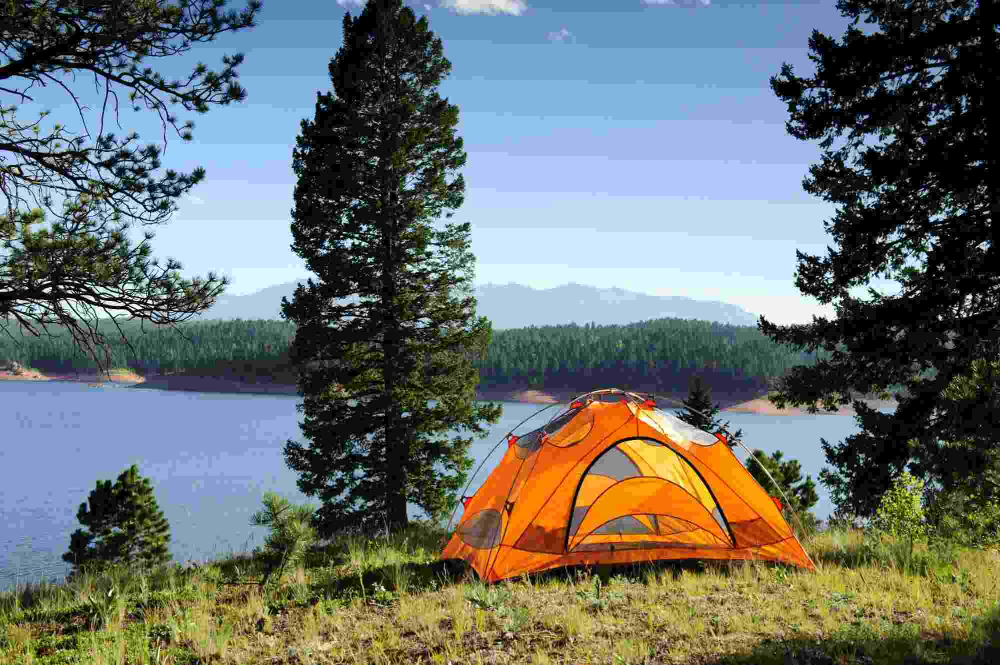

Have and Adventure
Offers
Rapids

Camping
Tours


Whitewater rafting can be traced back to 1811 when the first recorded attempt to navigate the Snake River in Wyoming was planned. With no training, experience, or proper equipment, the river was found to be too difficult and dangerous. Hence, it was given the nickname "Mad River". On June 9, 1940, Clyde Smith led a successful trip through the Snake River Canyon. In 1843, lieutenant John Fremont introduced the first rubber raft in the US. Later, in 1844, further enhancements were made by Peter Halkett. These vessels greatly facilitated whitewater navigation. It lasted for many years, with improvements in craftsmanship and safety over time.